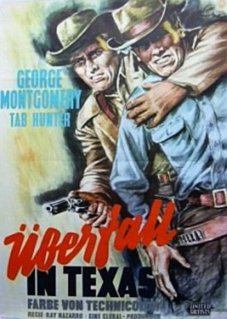

#4846 Überfall in Texas
Alternativ: Gun Belt
 
 IMDB-Wertung: 5.9 / 10
IMDB-Wertung: 5.9 / 10  Metascore: 0
Metascore: 0 
Einst war Billy Ringo ein berüchtigter Scharfschütze. Nun aber will der Outlaw aus Liebe zur schönen Arlene ein friedliches Leben als Farmer führen. Seine alte Bande lässt ihn nicht. Sie will ihn mit allen Mitteln für einen Bankraub gewinnen.
Jahr: 1953
Dauer: 75 Minuten
FSK: 12
Land: USA Studio: United ArtistsTonspuren: DD2.0 - ,
Untertitel:
Auflösung: 1080p (1440x1080) Größe: 3174 MB
Genre: Western
Regisseur: Ray Nazarro
Drehbuch: Milt Rosen
Soundtrack:
Darsteller:
- George Montgomery als Billy Ringo
- Tab Hunter als Chip Ringo
 John Dehner als Matt Ringo
John Dehner als Matt Ringo- William Bishop als Ike Clinton
 Jack Elam als Rusty Kolloway
Jack Elam als Rusty Kolloway Douglas Kennedy als Mel Dixon
Douglas Kennedy als Mel Dixon James Millican als Wyatt Earp
James Millican als Wyatt Earp Willis Bouchey als Endicott
Willis Bouchey als Endicott- Boyd Stockman als Turkey Creek
 Robert Bice als Wells Fargo Guard , uncredited
Robert Bice als Wells Fargo Guard , uncredited Lane Chandler als Townsman , uncredited
Lane Chandler als Townsman , uncredited- Edmund Cobb als Lynch Mob Member , uncredited
 Byron Foulger als The Hotel Clerk , uncredited
Byron Foulger als The Hotel Clerk , uncredited Al Hill als Lynch Mob Member , uncredited
Al Hill als Lynch Mob Member , uncredited Rex Lease als Lynch Mob Member , uncredited
Rex Lease als Lynch Mob Member , uncredited- Bud Osborne als Stage Driver , uncredited
 Syd Saylor als Bartender , uncredited
Syd Saylor als Bartender , uncredited- Emil Sitka als Townsman , uncredited
 George Sowards als Lynch Mob Member , uncredited
George Sowards als Lynch Mob Member , uncredited Harry Strang als Townsman in Bank , uncredited
Harry Strang als Townsman in Bank , uncredited- Helen Westcott als Arlene Reach
 Hugh Sanders als Douglas Frazer
Hugh Sanders als Douglas Frazer- Bruce Cowling als Virgil Earp
- Joe Haworth als Hoke
 William 'Bill' Phillips als Curley
William 'Bill' Phillips als Curley- Boyd 'Red' Morgan als Texas Jack
 Chuck Roberson als Oliver
Chuck Roberson als Oliver- Jack Carry als Mort
 Edgar Dearing als Territorial Prison Guard , uncredited
Edgar Dearing als Territorial Prison Guard , uncredited- Jack Low als Lynch Mob Member , uncredited
- Lee Phelps als Bank Guard , uncredited
Datei: X:\HD-Western-1900-1959\Überfall in Texas (1953, FSK12, 1440x1080).mkv seit 23.11.2016
Festplatte: HD Eastern+Western
 Es gibt insgesamt 98 Filme in der Gruppe 'HD-Western-1900-1959'
Es gibt insgesamt 98 Filme in der Gruppe 'HD-Western-1900-1959'